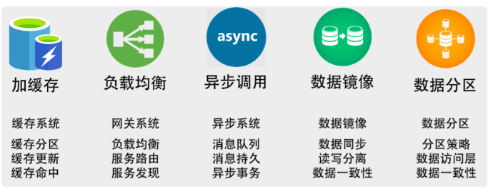
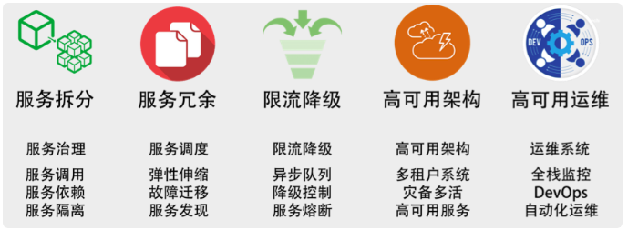
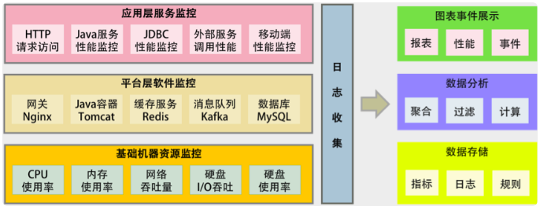
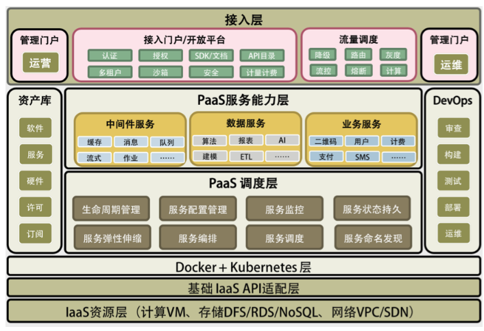
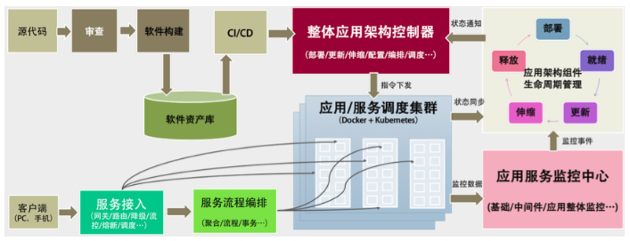

本文总结《左耳听风》分布式系统部分内容，为了帮助理解其中逻辑、加深记忆，也为了能时常的复习。
分布式系统的发展
20世纪70年代模块化编程
80年代的面向事件设计
90年代的基于接口、构件设计，并演化出了SOA，基于服务的框架
SOA将应用系统功能作为服务发送给最终用户或者其他服务。
SOA遵循以下几条原则：
- 可重用，模块化，可组合，构件化以及又互操作性
- 符合开发标准
- 服务的识别和分类，提供和发布，监控和跟踪
服务间并不直接依赖，而是通过中间件的标准协议或者通讯框架相互依赖。其实就是接口设计思想。
2010年后，出现了微服务架构。
每一个微服务都能独立完整的运行，后端单体的数据库也被分散到不同的服务中。服务间的整合需要一个服务编排或是服务整合的引擎。如k8s。
微服务的出现使得开发速度变得更快，部署快，隔离性高，系统的扩展度也很好，但是在集成测试、运维和服务管理等方面就比较麻烦了。
{kind=link}
分布式系统技术栈
目的
构建分布式系统的目的：一是提高整体架构的吞吐量，服务更多的并发和流量，二是为了提高系统的稳定性，让系统的可用性更高。
提高吞吐量
缓存系统。加入缓存系统，可以有效地提高系统的访问能力。从前端的浏览器，到网络，再到后端的服务，底层的数据库、文件系统、硬盘和 CPU，全都有缓存，这是提高快速访问能力最有效的手段。对于分布式系统下的缓存系统，需要的是一个缓存集群。这其中需要一个 Proxy 来做缓存的分片和路由。
负载均衡系统。负载均衡系统是水平扩展的关键技术，它可以使用多台机器来共同分担一部分流量请求。
异步系统。异步系统主要通过消息队列来对请求做排队处理，这样可以把前端的请求的峰值给“削平”了，而后端通过自己能够处理的速度来处理请求。这样可以增加系统的吞吐量，但是实时性就差很多了。同时，还会引入消息丢失的问题，所以要对消息做持久化，这会造成“有状态”的结点，从而增加了服务调度的难度。
数据分区。是把数据按一定的方式分成多个区（比如通过地理位置），不同的数据区来分担不同区的流量。这需要一个数据路由的中间件，会导致跨库的 Join 和跨库的事务非常复杂。
数据镜像。是把一个数据库镜像成多份一样的数据，这样就不需要数据路由的中间件了。你可以在任意结点上进行读写，内部会自行同步数据。然而，数据镜像中最大的问题就是数据的一致性问题。
提高稳定性

纲领

这个可以从表层往深层看
- 流量监控与调度
- 服务监控与调度
- 数据(状态)监控与调度
- 资源监控与调度
在原文中，将监控抽象出来，称为全栈监控
全栈监控
定义

在这里隐含着，日志数据格式标准化。
资源监控：
监控主机和底层资源。比如：CPU、内存、网络吞吐、硬盘 I/O、硬盘使用等。中间层监控：
就是中间件层的监控。比如：Nginx、Redis、ActiveMQ、Kafka、MySQL、Tomcat 等。应用监控：
监控应用层的使用。比如：HTTP 访问的吞吐量、响应时间、返回码，调用链路分析，性能瓶颈，还包括用户端的监控。这里与上文的分析有点不一致。
功能
服务调用链跟踪
这个监控系统应该从对外的 API 开始，然后将后台的实际服务给关联起来，然后再进一步将这个服务的依赖服务关联起来，直到最后一个服务（如 MySQL 或 Redis），这样就可以把整个系统的服务全部都串连起来了。这个事情的最佳实践是 Google Dapper 系统，其对应于开源的实现是 Zipkin。
服务调用时长分布
其实这个是调用链跟踪的统计，使用zipkin就可以分析出，在这个调用链上各服务的时长分布。
服务TOP N试图
也是对调用链跟踪的一种统计，时长、被调用次数等都可以
数据库操作关联
对数据库操作的监控，在Java中通过JavaAgent字节码注入技术拿到JDBC执行数据库操作的执行时间
服务资源跟踪
需要把服务运行的机器节点上的数据（CPU、MEM、I/O、DISK、NETWORK）关联起来
功能上的监控偏向于网络、数据库、节点资源
服务调度
服务关键程度、服务依赖关系
关于服务关键程度，主要是要我们梳理和定义服务的重要程度。这不是使用技术可以完成的，它需要细致地管理对业务的理解，才能定义出架构中各个服务的重要程度。
依赖关系就像“铁锁连环”一样，一个服务的问题很容易引起一条链上的问题。传统的 SOA 希望通过 ESB 来解决服务间的依赖关系，微服务中希望服务间是没有依赖的，而让上层或是前端业务来整合这些个后台服务。
解决服务依赖的方案一般是，依赖颠倒的设计模式，其实就是接口在架构端的实现。
服务依赖的发现也是用的服务调用链跟踪技术，Zipkin
服务发现和生命周期管理
还需要有一个服务发现的中间件。因为这个“架构城市”是非常动态的，有的服务会新加进来，有的会离开，有的会增加更多的实例，有的会减少，有的服务在维护过程中（发布、伸缩等），所以我们需要有一个服务注册中心，来知道，整个系统中服务的种类、各种类的实例数、版本如何，每个服务的状态。
服务的状态（生命周期）包括：
- Provision，代表在供应一个新的服务
- Ready，启动成功
- Run，正在运行
- Update，升级中
- Rollback，回滚中
- Scale，伸缩中
- Destroy，销毁中
- Failed，失败
整个架构的版本控制
服务状态的维持与拟合
这里的服务状态指的的服务的运行状态（status），也就是上文中的状态，本质上，维持服务从一个状态到另一个状态，从套路上看，可以分成2种：
正常的scale
扩展集群，发布新版本等，流程：
- 先扩展出几个结点；
- 再往上部署服务；
- 然后启动服务；
- 再检查服务的健康情况；
- 最后把新扩展出来的服务实例加入服务发现中提供服务。
如果是替代原有的版本，需要慢慢的把流量切换过来
故障迁移
与scale差别很小- 服务的健康监控
- 自动重启服务或者自动重新部署服务
服务工作流和编排
关于服务的编排会直接导致一个服务编排的工作流引擎中间件的产生。通过工作流引擎，可以非常快速地将若干个服务编排起来形成一个业务流程。（借鉴AWS 上的 Simple Workflow 服务）
我理解的意思，是服务本身并不包含业务的流程，只提供低耦合下的单一服务，业务的流程交由工作流引擎来做。负责控制先访问哪个，后访问哪个服务来完成一个业务。
流量调度
目标：
依据系统运行的情况，自动地进行流量调度，在无需人工干预的情况下，提升整个系统的稳定性；
让系统应对爆品等突发事件时，在弹性计算扩缩容的较长时间窗口内或底层资源消耗殆尽的情况下，保护系统平稳运行。要求：
高性能。API Gateway 必须使用高性能的技术，所以，也就需要使用高性能的语言。
集群化。要能扛流量，就需要使用集群技术。集群技术的关键点是在集群内的各个结点中共享数据。这就需要使用像 Paxos、Raft、Gossip 这样的通讯协议。因为 Gateway 需要部署在广域网上，所以还需要集群的分组技术。
业务逻辑。API Gateway 需要有简单的业务逻辑，所以，最好是像 AWS 的 Lambda 服务一样，可以让人注入不同语言的简单业务逻辑。像是nginx中的openresty
PS：状态数据调度部分后面的章节设计的更多，像是编程范式中，以及有状态服务章节，这里暂时先不总结。
总结Paas平台
本质
服务化的能力供应：服务化的能力应该是指的上文的服务调度，软件模块重用，服务治理
分布式多层的系统架构：多租户隔离、高可用、服务编排
自动化的运维能力：自动化伸缩paas平台的总体架构

这个与之前的微服务架构是大同小异的。在杨波那里，paas调度层是paas层，paas服务能力层的中间件服务是支撑服务，在其上是微服务，也就是saas，这里增加了数据服务与业务服务。
网关层基本类似paas平台的生产与运维

左上是开发流程，右下是监控，中间是服务调度
拓展阅读
CAP定理
Consistency（一致性）：每次读取要么获得最近写入的数据，要么获得一个错误。
Avaliable(可用性)：每次请求都能获得一个（非错误）响应，但不保证返回的是最新写入的数据。
Partition tolerance(分区容忍)：尽管任意数量的消息被节点间的网络丢失（或延迟），系统仍继续运行。CA：这样的系统关注一致性和可用性，它需要非常严格的全体一致的协议，比如“两阶段提交”（2PC）。CA 系统不能容忍网络错误或节点错误，一旦出现这样的问题，整个系统就会拒绝写请求，因为它并不知道对面的那个结点是否挂掉了，还是只是网络问题。唯一安全的做法就是把自己变成只读的。
CP：这样的系统关注一致性和分区容忍性。它关注的是系统里大多数人的一致性协议，比如：Paxos 算法（Quorum 类的算法）。这样的系统只需要保证大多数结点数据一致，而少数的结点会在没有同步到最新版本的数据时变成不可用的状态。这样能够提供一部分的可用性。
AP：这样的系统关心可用性和分区容忍性。因此，这样的系统不能达成一致性，需要给出数据冲突，给出数据冲突就需要维护数据版本。Gossip 就是这样的系统。

分布式系统的8个误区
分布式工程师的分布式理论
Distributed systems theory for the distributed systems engineer
Paxos算法
Raft算法
In search of an Understandable Consensus Algorithm (Extended Version)
Gossip协议
Aurora分布式数据库
aurotaSpanner分布式数据库
spanner